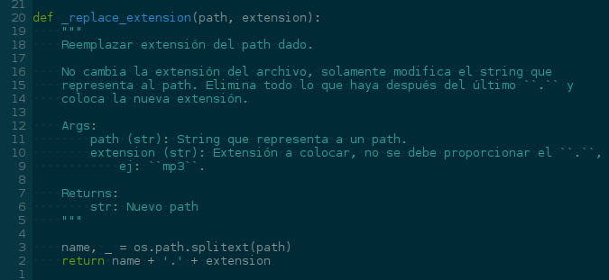
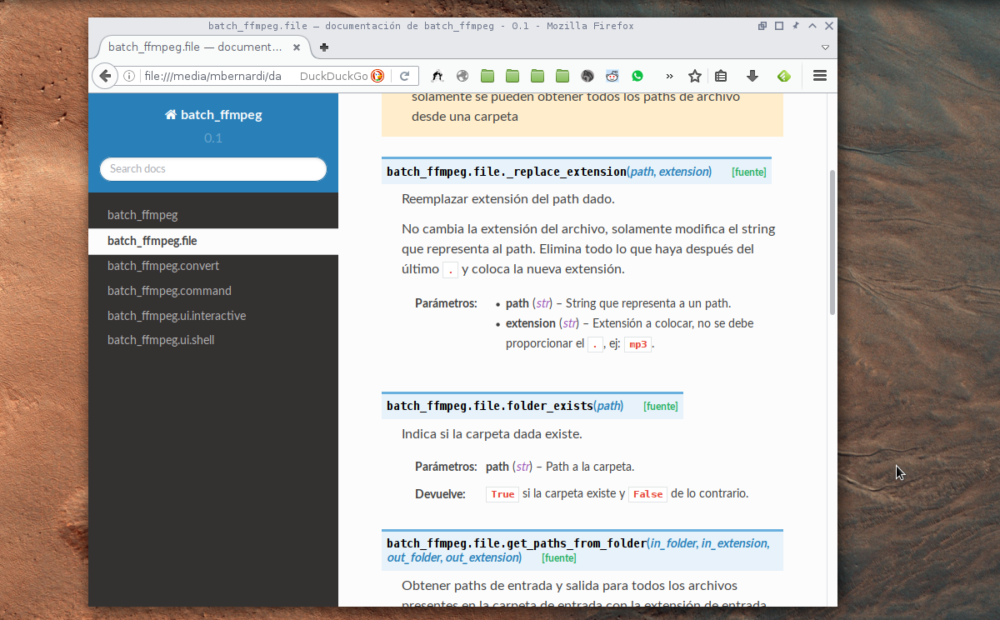

Introducción¶
Esto sirve para generar documentación en una página web como esta que estás viendo a partir de docstrings que son comentarios especiales que uno pone en el código fuente. Lo que hay que hacer es configurar Sphinx y luego cada tanto correr un comando y generar los archivos html con la documentación.
También se puede documentar texto (por ejemplo esta guía) y además de html exportar en pdf o epub.
Un docstring se ve algo así:
Los docstrings tienen que ser escritos siguiendo un estilo, el estilo que yo recomiendo por ser el más fácil es Google Style. Se escribe como se muestra en la foto.
A partir de eso, se genera una documentación que se ve algo así:
Al documentar texto hay que escribir unos archivos .rst en
`reStructuredText`_, un ejemplo de eso es esta guía:
Y al generar el html se obtiene lo que estás viendo ahora.
La documentación se escribe en archivos .rst, que están ubicados en una
carpeta llamada source. A partir de estos archivos, que se escriben en
`reStructuredText`_, se genera la página web. En esos mismos archivos .rst
uno especifica qué docstrings extraer desde el código fuente (Python). Más
adelante hay ejemplos y creo que se entiende mejor.
Los archivos y carpetas pueden organizarse de varias formas, la forma recomendada de organizar el proyecto es:
.
├── docs
│ ├── build
│ │ ├── ...
│ │ └── html
│ │ ├── ...
│ │ └── index.html
│ ├── Makefile
│ └── source
│ ├── ...
│ ├── conf.py
│ └── index.rst
├── LICENSE.txt
├── README.md
└── miproyecto
├── ...
└── main.py
En docs va todo lo relacionado con la documentación, dentro hay un
Makefile y las carpetas source y build.
source tiene la documentación escrita en `reStructuredText`_ y un archivo
conf.py con las configuraciones usadas por `Sphinx`_. Dentro de build
está la misma documentación en html ya generada por `Sphinx`_. Por último el
Makefile permite generar la documentación (que se pone en build) con un
comando.
Después en otra carpeta aparte, miproyecto está el código. LICENSE.txt y
README.md se suelen agregar para presentar el proyecto en por ejemplo
`GitHub`_.